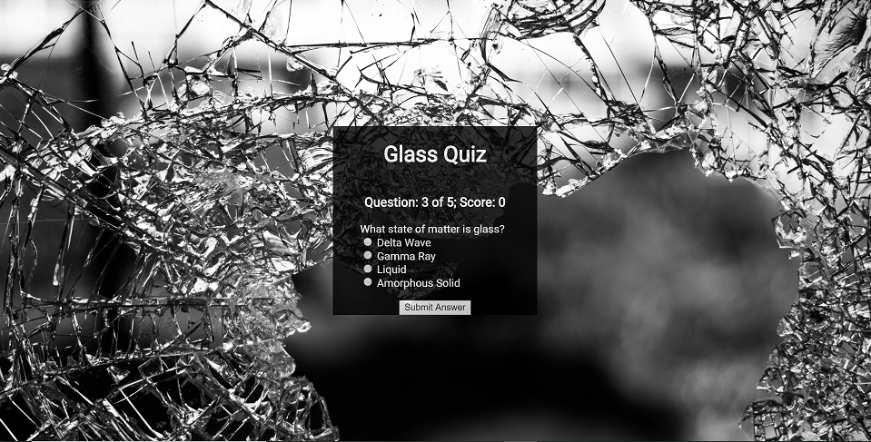

I'm Adam, web developer,problem solver.
I live in upstate New York. I enjoy the outdoors, making stained glass, puzzles, and games. I've always had a passion for riddles and puzzles which led me to web development. I thoroughly enjoy the process of identifying what is needed, determining the steps to get the desired result, and achieving the solution. I believe any problem can be solved with the right tools and seen from the proper perspective. I'd like to use my knowledge of HTML, JavaScript, jQuery, and CSS to solve your problems.
Projects:
Quiz app
Developed with HTML, CSS, and jQuery.
An app that quizzes the user one question at a time. Multiple choice answers are given for each question. Checks to make sure user has picked an answer before checking to see if the user is correct. Gives feedback about the correct answer once an answer is submitted. The current question number as well as score is displayed to the user at all times. If the user gets a question correct the background changes to a picture of stained glass, if the user gets a question wrong the background is changed to an image of broken glass. At the end of the quiz the user is given the choice to start the quiz again.